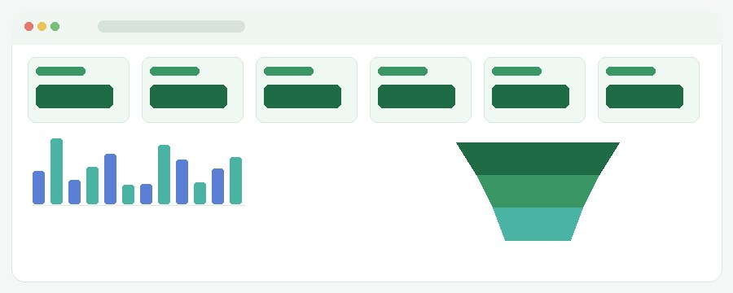
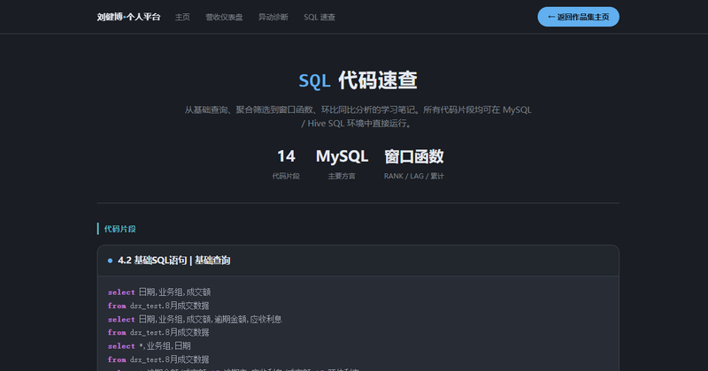
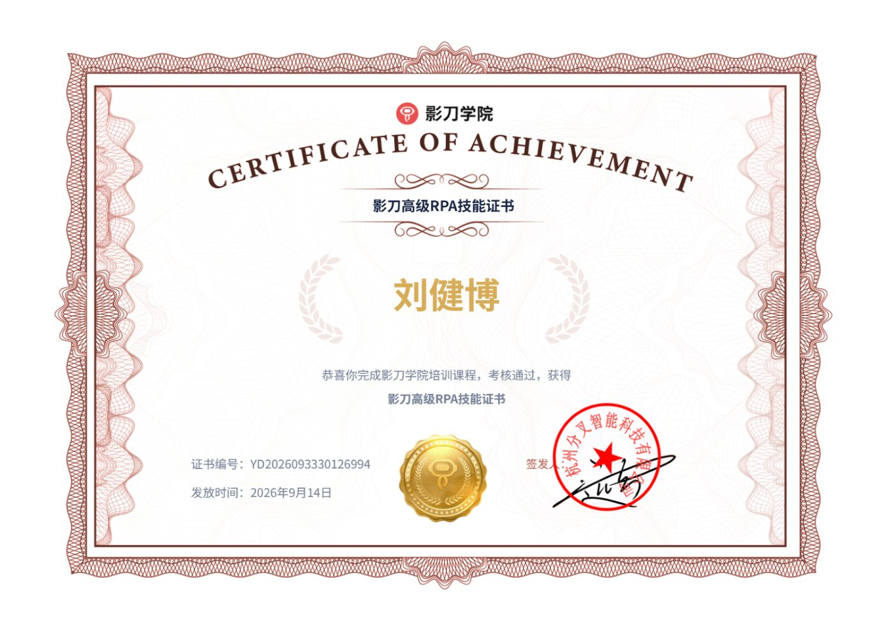
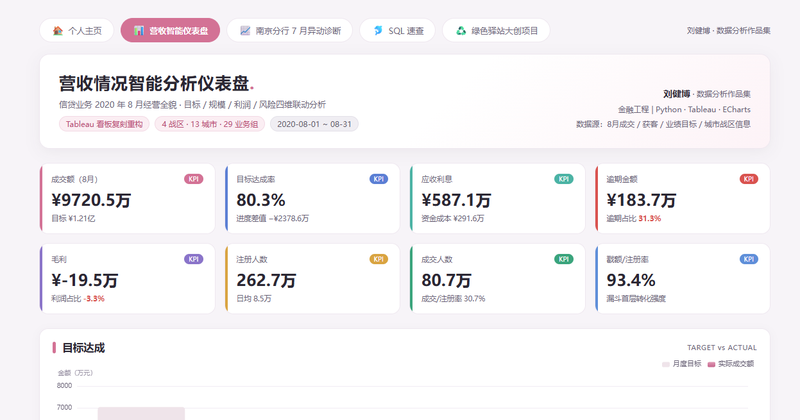
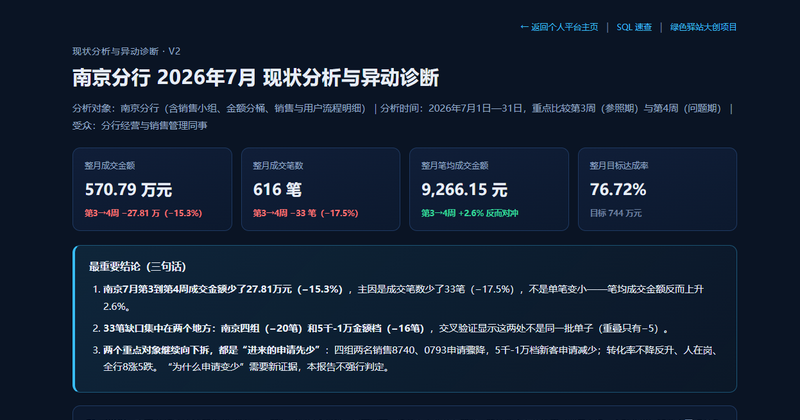
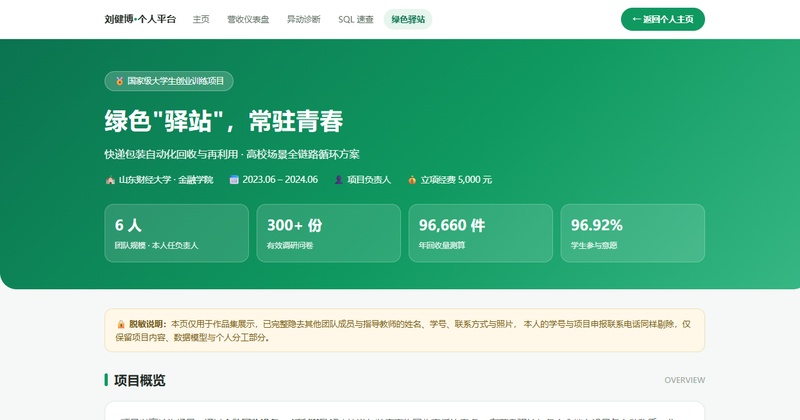

求职意向电商数据分析 / 运营分析 · 意向城市 杭州
金融工程背景，具备企业数据处理经验，能够使用 SQL、Python、Excel 与 Tableau / FineBI 完成电商报表、看板和专题分析。
统一达人/视频/商品 ID 建内容研究底表，补分类维度，支撑不同类型内容的互动效果横向对比。
查看报表 →
🐫 骆驼 · 看板FineBI 搭建种草监控看板：KPI 总览、播放互动趋势、转化漏斗、达人预估对比、内容方向桑基图。
进入看板 →从看板结论回到内容本身，输出达人筛选与内容方向的可执行策略，明确结论边界。
查看报告 →
从基础查询、聚合筛选到窗口函数、环比同比与累计计算，暗色代码高亮，可直接复用。
查看笔记 →脱敏说明：以上为可公开的作品演示。品牌合作的具体商单费用、达人报价、交易金额等非公开数据已隐藏或以模拟演示数据替代；指标定义、计算方法、筛选条件、图表结构与分析过程完整保留。

影刀 RPA 官方高级技能认证 · 用于电商数据自动化采集、清洗与报表流程搭建。
流程自动化 · 数据采集与报表机器人
大学英语六级
全国计算机等级考试
报表只能看单期，业务希望动态监控种草大盘，并按达人与内容维度下钻、快速定位高效与低效投放。
用 SQL 按达人类型、商品类别、内容场景、观察周期汇总源数据形成可追溯底层数据集；用 FineBI 搭建 KPI 总览、播放互动趋势、转化漏斗、达人预估对比、达人方向散点与内容方向桑基图。
综合转化率约 0.12%（约为行业 6 倍）；约 35% 的视频单位转化成本高于阈值、被标为低效投放复核对象；无效种草率约 15%。绝对曝光量已按客户数据保密要求模糊化。
公开数据只比较内容分布与互动表现；有效观看、间接转化等字段单独标注口径来源，不与支付转化、销售额混算；无交易数据时不推算销售额。
品牌旗舰店从流量到成交的转化路径不清晰，运营难以定位流失最集中的环节，也难以区分高价值人群做精细化运营。
用 Python/Pandas 对行为日志去重、补缺、标准化并沉淀清洗流程；围绕人货场搭建 UV/PV、转化率、复购率、客单价、留存率指标体系并输出指标字典；用漏斗模型拆解浏览-加购-下单-支付，用 RFM 划分用户价值分层；用 Tableau 输出行为看板。
下单→支付环节流失最集中，是转化优化的首要抓手；用户价值高度集中，少数高频高额人群贡献大部分成交额，存在明显分层运营空间。
对支付前流失环节增加优惠/提醒触达；对高价值人群做专属权益、沉睡人群做召回测试，并用看板持续监控活动前后转化变化。

Tableau 复刻重构：目标达成、用户漏斗、利润结构与逾期风险四维交互看板（模拟演示数据）。
进入看板 →
量价拆解、逐层下钻、关键问题归因与证据链诊断，完整呈现从异动发现到结论的分析思路。
查看报告 →
问卷调研、SPSS 多元 Logistic 回归、TAM/SAM/SOM 规模测算与四年财务预测。
查看项目 →另含：海航财务健康度量化与 CSI 指数归因分析、证券客户分层画像与精准营销策略优化（均为金融场景，脱敏处理）。SQL 速查笔记见作品集，实际项目查询见上方各作品内嵌代码。
GPA 4.75/5.0（专业 TOP 3%）· 互联网+ 大赛银奖 · 大创国家级立项
主修：Python、MATLAB、概率论与数理统计、计量经济学与金融工程